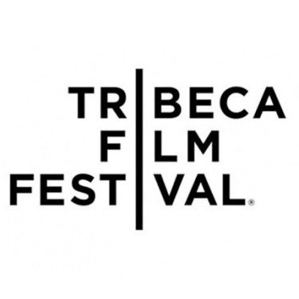
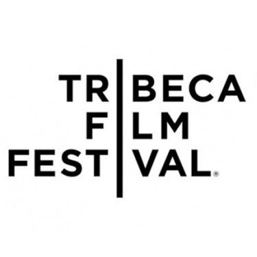

Известнейшие кинофестивали
Добро пожаловать в мир самых престижных и влиятельных кинофестивалей на планете. Эти исторически значимые события стали символами кинематографической элиты, привлекая внимание мировых кинодеятелей, аудиторий и поклонников искусства кино. От изысканных и элегантных Каннских кинопремий до многогранных и разноплановых Венецианских фильмов - эти фестивали являются платформами для премьер мировых шедевров, дискуссий о культуре, социальных вопросах и новаторских идеях в кинематографе. Погрузитесь в захватывающую атмосферу этих фестивалей, где встречаются мастера киноискусства и развиваются новые тенденции в мире кино.


 
